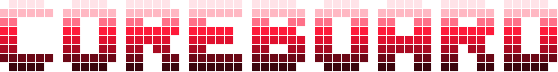
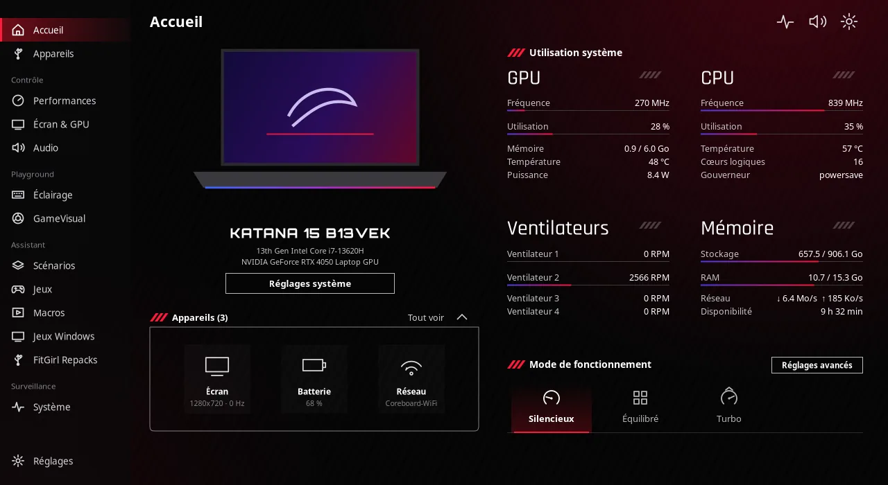
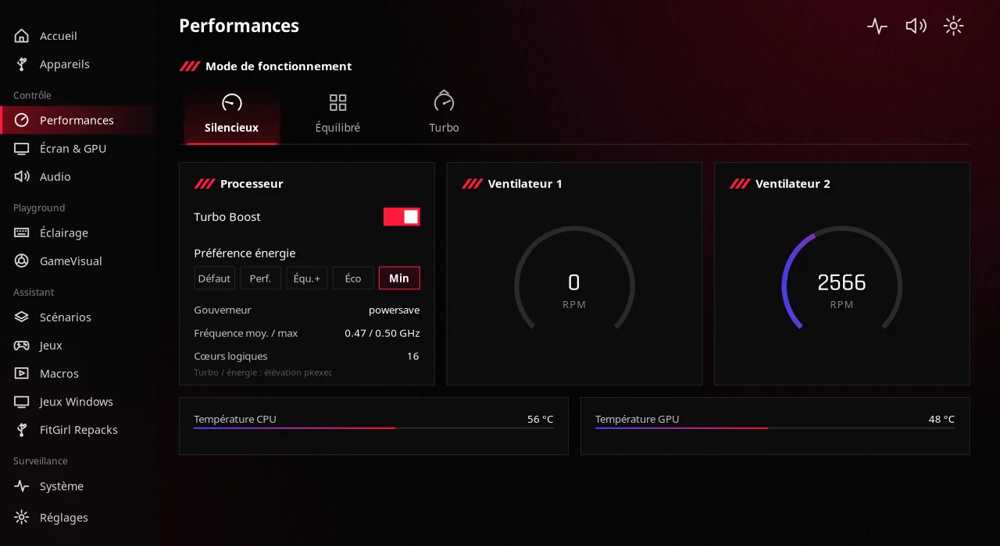
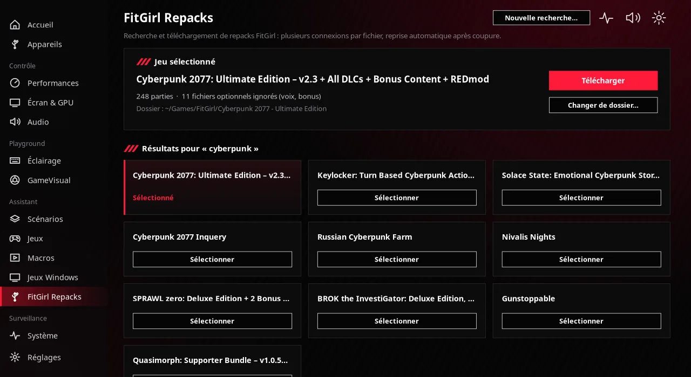

Modes de fonctionnement
Silencieux, Équilibré, Turbo : un clic bascule le profil d'alimentation du système.

Performances, processeur, GPU, écran, éclairage RGB, scénarios et jeux : tout ton PC dans une seule application rapide, écrite en C et GTK4.
Sous Windows, les constructeurs fournissent un panneau pour tout régler. Sous Linux, il fallait jongler entre dix outils en ligne de commande. Coreboard les réunit dans une interface sombre et soignée.

Chaque réglage passe par les interfaces standard de Linux : power-profiles-daemon, sysfs, D-Bus, polkit.
Silencieux, Équilibré, Turbo : un clic bascule le profil d'alimentation du système.
Turbo Boost, préférence énergétique, gouverneur, températures, fréquences et mode GPU hybride.
Fréquence de rafraîchissement, luminosité et filtre lumière bleue, sous Hyprland, Sway, KDE, GNOME ou X11.
Effets par zone, couleurs personnalisées et mode Musique qui fait réagir le clavier au son.
Quand un jeu prend le focus, Coreboard applique le mode et la fréquence voulus, puis restaure les réglages.
Enregistre des séquences de touches, rejoue-les avec répétitions et assigne-leur un raccourci global.
Steam, Epic (Legendary), GOG, Lutris et applications de jeu, réunis et lançables d'un clic.
Proton-GE et umu-launcher, DLSS, ray tracing, GameMode, MangoHud et un diagnostic qui optimise le système.
Recherche, téléchargement segmenté reprenable, extraction et installation dans Wine. En savoir plus
Barre latérale, en-têtes rouges, cartes de mesures en direct : l'ergonomie des centres de contrôle gaming, sans leur lourdeur.

Recherche un repack FitGirl, télécharge-le et installe-le dans Wine en quelques clics. Plus besoin de gestionnaire de téléchargement ni de manipulations dans le terminal.
Respecte le droit d'auteur de ton pays : télécharge uniquement des jeux que tu as le droit d'utiliser. Coreboard n'est pas affilié à FitGirl Repacks et n'héberge aucun fichier.

Coreboard choisit lui-même le bon outil selon ton système, et installe ce qui manque avec le gestionnaire de paquets de ta distribution.
| Fonction | Hyprland | Sway | KDE Plasma | GNOME | X11 |
|---|---|---|---|---|---|
| Matériel, profils, CPU, GPU, audio | Oui | Oui | Oui | Oui | Oui |
| Fréquence d'écran | Oui | Oui | Oui | Oui | Oui |
| Filtre lumière bleue | Oui | Oui | Natif | Natif | Oui |
| Scénarios par application | Oui | Oui | Jeux XWayland | Jeux XWayland | Oui |
| Macros (rejeu) | wtype | wtype | ydotool | ydotool | xdotool |
| GameVisual (filtre d'écran) | Oui | — | — | — | — |
Processeurs Intel, AMD et ARM · GPU NVIDIA, AMD et Intel · GTK 4.10 ou plus récent requis.
Choisis ta distribution, copie les commandes dans un terminal.
# paquet natif : démon de refroidissement et règle udev inclus
$ git clone https://github.com/2Deathadder/coreboard.git
$ cd coreboard/packaging/arch && makepkg -si$ sudo apt install -y git
$ git clone https://github.com/2Deathadder/coreboard.git && cd coreboard
$ make deps && make && make install$ sudo dnf install -y git
$ git clone https://github.com/2Deathadder/coreboard.git && cd coreboard
$ make deps && make && make install$ sudo zypper install -y git
$ git clone https://github.com/2Deathadder/coreboard.git && cd coreboard
$ make deps && make && make installEnsuite, lance coreboard depuis le menu des applications. Un raccourci clavier sur coreboard --toggle ouvre et ferme la fenêtre.
Oui. Coreboard regroupe dans une seule application native ce que proposent Armoury Crate ou MSI Center sous Windows : modes de performance, réglages du processeur et du GPU, écran, éclairage RGB, scénarios par application et gestion des jeux. Il n'est affilié ni à ASUS ni à MSI.
Arch Linux et ses dérivées (Omarchy, CachyOS, EndeavourOS, Manjaro), Debian 13 et Ubuntu 24.04 ou plus récents, Fedora 38 ou plus récent et openSUSE Tumbleweed. Il faut GTK 4.10 ou plus récent.
Hyprland, Sway, KDE Plasma, GNOME et les bureaux X11. Les fonctions s'adaptent : fréquence d'écran via le bureau, filtre lumière bleue natif sous GNOME et KDE, détection des jeux XWayland.
Non. Coreboard détecte ce que ton PC expose réellement (processeur Intel, AMD ou ARM, GPU NVIDIA, AMD ou Intel, écran, batterie) et masque ce qui n'existe pas. Seuls l'éclairage du clavier et le refroidissement adaptatif sont propres à certains portables MSI.
Oui, Coreboard est un logiciel libre et gratuit sous licence GPL-3.0. Le code source est sur GitHub.